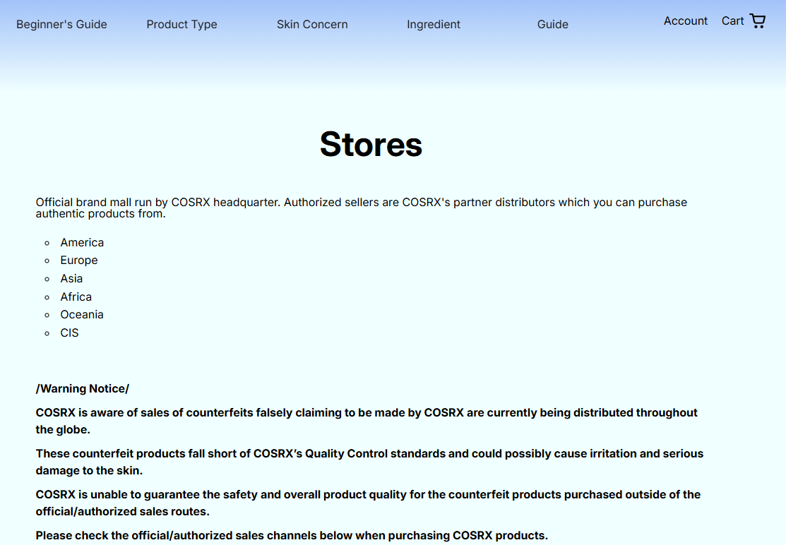

Unclear Positioning
My role and strengths weren't immediately apparent.
The landing experience didn't clearly communicate what I do, what kind of problems I solve, or what visitors should explore next.

The Challenge
My original portfolio presented my projects, but it didn't communicate the story behind them clearly. Case studies relied heavily on screenshots and brief descriptions, making it difficult to understand the problems I was solving, the reasoning behind my decisions, or how my work connected to user needs.
I wanted to rethink the portfolio as a UX problem itself: creating an experience that helps recruiters quickly understand who I am as a designer, how I approach problems, and the value behind my work.
Evaluation
I followed the same path a visitor would take from the homepage into individual projects, documenting where the experience failed to clearly communicate my role, process, and work.
Reviewed what was immediately visible before interacting with the page.
Followed the portfolio from homepage to project pages and noted where context or reasoning was missing.
Compared what was visually emphasized with what was most important for understanding the work.
Checked whether the interface made it clear where to go next and how to move between projects.
The Problem
The evaluation revealed three recurring problems in how my work was communicated.

My role and strengths weren't immediately apparent.
The landing experience didn't clearly communicate what I do, what kind of problems I solve, or what visitors should explore next.
Projects emphasized final screens over design reasoning.
Case studies relied heavily on screenshots and short descriptions, leaving out much of the context, decision-making, and process behind the final designs.
Information lacked a clear narrative and hierarchy.
Project content wasn't structured around a progression from problem to process to outcome, making the work harder to scan and understand.
Defining the Direction
The findings changed how I approached the redesign. Rather than treating each issue as an isolated fix, I used them to define a broader direction for the portfolio: make my value clear quickly, make my reasoning visible, and make deeper project stories easy to explore.
This shift became the lens for every design decision that followed.
Redesigning the Experience
With the direction established, I redesigned the portfolio around three parts of the experience: how visitors first understand me, how they explore my design thinking, and how they move between projects.
Landing Experience

I reworked the opening content so visitors can understand my role and design focus before exploring individual projects.
I gave priority projects greater visual emphasis so recruiters can identify the work I most want them to explore.
I created a clearer path from the introduction into featured case studies, reducing ambiguity about where visitors should go next.